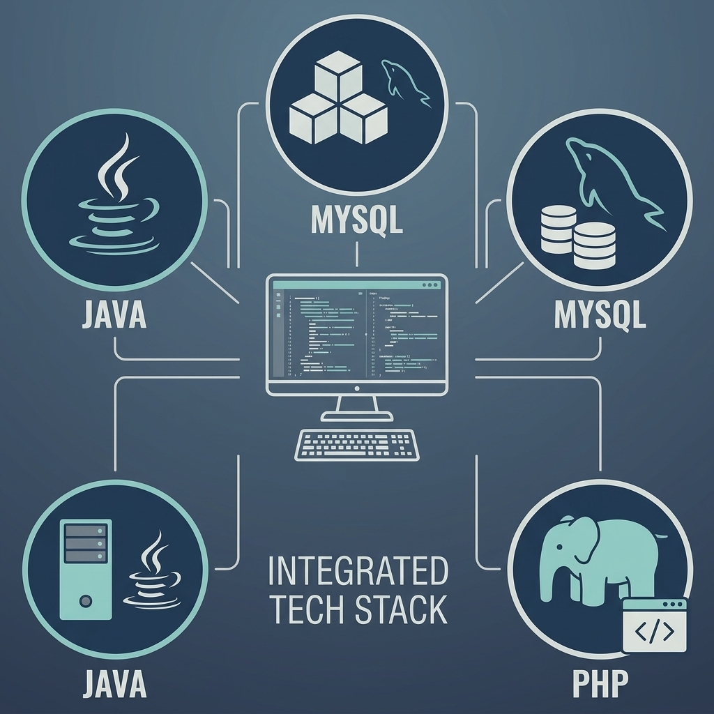
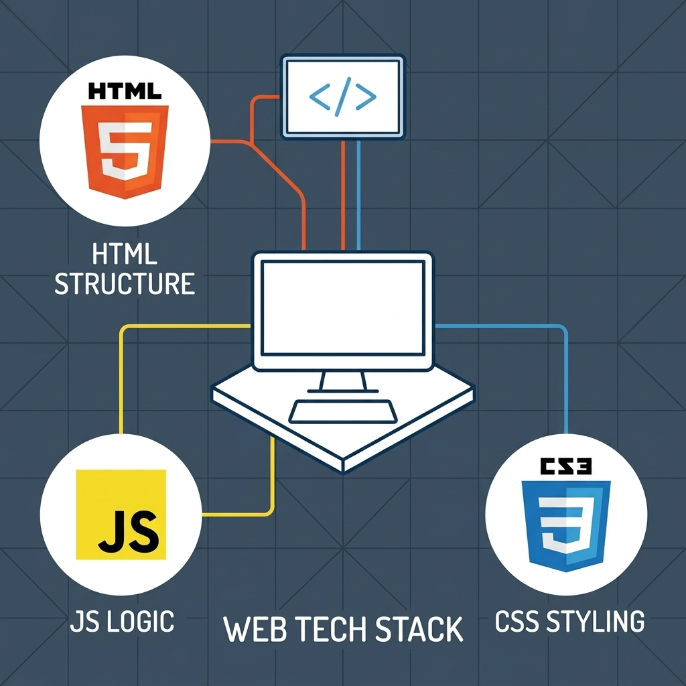
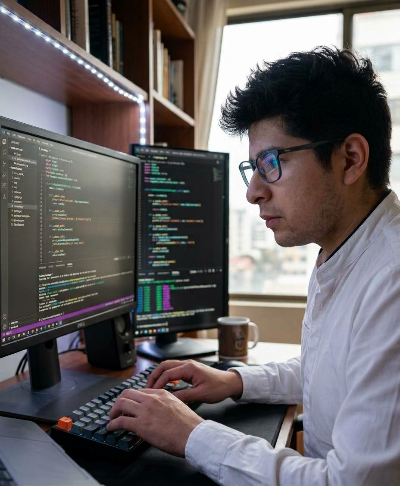

Estudios - Desarrollo de Aplicaciones WEB

El desarrollo en el lado del servidor constituye la columna vertebral de las aplicaciones web, enfocándose en la lógica de negocio, el tratamiento de datos y la arquitectura robusta.
- Programación: Aprendizaje de la lógica de programación orientada a objetos (con lenguajes como Java), estructuración de algoritmos y gestión eficiente de funciones y estructuras de datos.
- Bases de Datos: Diseño, modelado y gestión de bases de datos relacionales (MySQL) para el almacenamiento, consulta y manipulación segura de la información mediante SQL.
- Desarrollo Web en Entorno Servidor: Creación de la lógica Backend y APIs que gestionan las peticiones de los usuarios, autenticación y comunicación con el servidor (PHP / Node.js).

El desarrollo en el lado del cliente se centra en la construcción de interfaces interactivas, accesibles y con una gran experiencia de usuario.
- Desarrollo Web en Entorno Cliente: Aprendizaje y dominio de JavaScript para añadir interactividad, dinamicidad y manipulación del DOM en tiempo real en la aplicación web.
- Diseño de Interfaces Web: Maquetación y estructuración mediante HTML5 y CSS3, aplicando principios de usabilidad (UX/UI), diseño adaptable (responsive design) y accesibilidad.
- Tecnologías y Frameworks: Integración de herramientas modernas para la maquetación y consumo de APIs que conectan visualmente con la lógica Backend.
Experiencia

Mi experiencia personal para con el curso ha sido muy satisfactoria en general. Descubrir nuevas formas de aprender, nuevas técnicas y tecnologías en el ámbito de la informática.
Compañeros y profesores empáticos y amables con una convivencia muy amena y divertida.
Este curso también me ha servido para darme cuenta que tengo mucho más potencial del que creía, si quieres puedes. Como todo en la vida es sacrificio y trabajo duro.
He tenido suerte de poder estudiar lo que quería cuando quería. Sin limitaciones ni trabas.
Conclusión
Después de todo lo desarrollado y trabajado a lo largo de 1er año y cursando el actual puedo decir que he encontrado el oficio que estaba buscando para dedicarme en la vida, siempre estudiando, actualizando y mejorando.